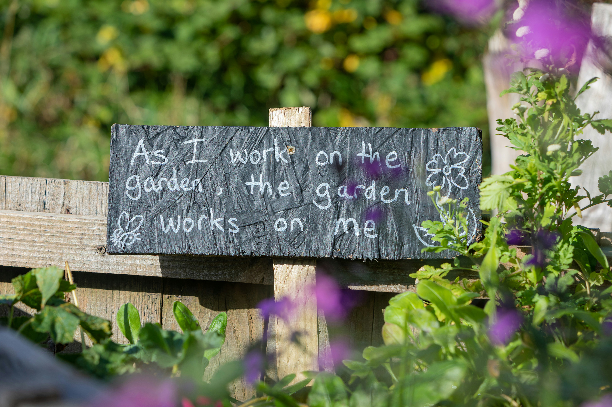
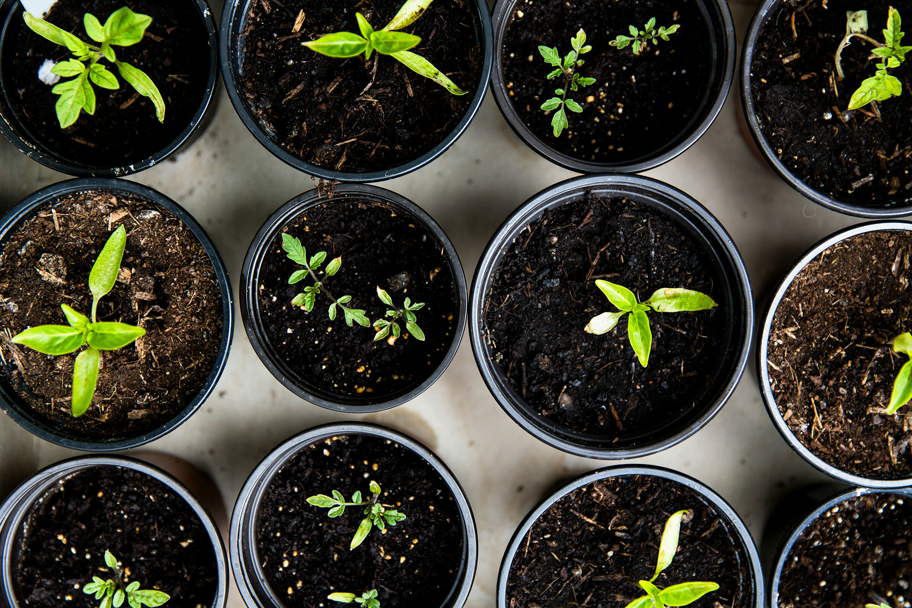
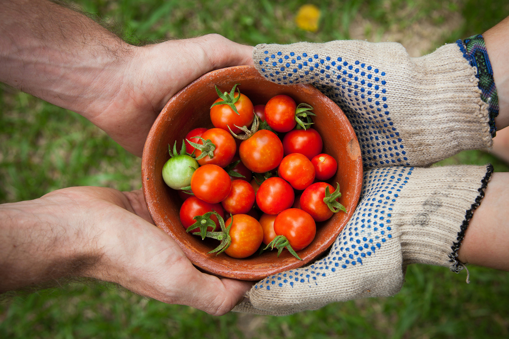

Workshops & Events
Join Sprout & Grow for hands-on gardening workshops designed to help you build confidence, learn new skills, and connect with other plant lovers in your community.
🌱 Spring Planting Workshop

Kick off the growing season with our most popular workshop of the year.
- Soil preparation and compost basics
- Choosing the best plants for spring weather
- Seed starting techniques
- Hands-on planting practice
Perfect for beginners and first-time gardeners.
🏡 Indoor Gardening Basics

Learn how to keep plants healthy and thriving inside your home year-round.
- Understanding light levels in your home
- Best indoor plants for beginners
- Watering schedules and humidity tips
- Choosing the right pots and soil
Great for apartments, dorms, and small spaces.
🌿 Community Garden Day

Spend the day outdoors helping grow and maintain shared community garden spaces.
- Group planting and garden maintenance
- Learning sustainable gardening practices
- Meet and connect with local gardeners
- Family-friendly outdoor activity
No experience needed, just bring your enthusiasm!